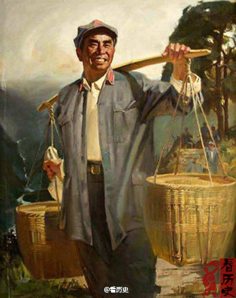

斯图亚特9
2013-07-22

斯图亚特9
2013-07-22
很多人都觉得只要目的是对人们产生正确的影响，传播谎言是无所谓的。不光是我们厌恶的意识形态教育者这么想，很多自认为民主自由的拥护者也如此。己所不欲，勿施于人。传播谎言最终总归是让人厌恶并产生反效果的，无论是处于什么目的。
@另起一行AnotherOne:
【吐槽】50年代初期，《朱德的扁担》被编入小学教材。然而在1967年，同样一篇课文已经换成了《林彪的扁担》。无数的“红小兵”们又开始学习林彪的艰苦朴素的精神。数年之后林彪事件发生，教材又悄然换回了《朱德的扁担》。#一根扁担，就这样随着政治风云变幻而不断发生换位#
- 